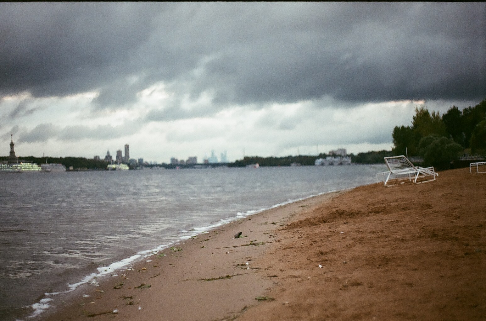

Основы экспозиции: диафрагма, выдержка, ISO на советских фотоаппаратах
Если вы только начинаете свой творческий путь в мире фотографии, то наверняка многие вещи вызывают вопросы.
Одни из основных параметров экспозиции — выдержка, диафрагма и чувствительность (ISO). В данной статье я
расскажу, что это такое и как с этим работать.
Диафрагма
Диафрагма — она же «перегородка»(с греческого), она же «aperture» на английском. Это устройство, располагающееся
в объективе фотокамеры и отвечающее за размер отверстия, через которое будет проходить свет на пленку.
Чтобы было понятнее, проведем аналогию со шторами: если мы сильнее раздвинем шторы, то света из окна будет
проникать больше, если задвинем, то, соответственно, меньше.
1 / 3
F2 (полностью открыта)
3 / 3
F16 (полностью закрыта)
❮
❯
Диафрагма регулируется кольцами на самом объективе и обозначается буквой «f». Вот типичный пример
шага (или стопа) диафрагмы:
f/1.4 – f/2 – f/2.8 – f/4 – f/5.6 – f/8 – f/11 – f/16 – f/22
С каждым новым стопом количество света уменьшается ровно в два раза. То есть количество проникаемого
света при диафрагме f/1.4 будет в два раза больше, чем при f/2.
Помимо количества проникаемого света, диафрагма также отвечает за еще один важный параметр — глубина
резкости. Тут все довольно просто — чем меньше значение диафрагмы, тем меньше глубина резкости
(значит задний фон сильнее размывается, оставляя в фокусе меньше пространства). При низких значениях
диафрагмы обычно снимают портреты. А при больших — пейзажи, городскую съемку.

Тут важно запомнить:
1.Чем ВЫШЕ значение диафрагмы, тем МЕНЬШЕ света проникает на пленку и глубина резкости ВЫШЕ
2. Чем НИЖЕ значение диафрагмы, тем БОЛЬШЕ света проникает на пленку и глубина резкости МЕНЬШЕ
3. Один стоп у диафрагмы уменьшает количество света в 2 раза, а само значение диафрагмы меняется в 1,4 раза.
Ниже оставляю небольшую шпаргалку по значениям диафрагмы:
Выдержка
Еще один важный элемент, отвечающий за экспозицию. Выдержка — это количество времени, в течение которого
свет будет проникать через объектив на пленку. Также можем провести аналогию со шторами — если мы просто
одернем шторы, то свет из окна буквально промелькнет в комнату, но если мы их распахнем и будем держать, то он
заполнит все помещение. Соответственно, чем длиннее выдержка, тем больше света проникает на пленку, т.е. кадр
получается светлее. Данная настройка измеряется в секундах или миллисекундах — чем больше число в знаменателе,
тем короче выдержка (то есть 1/2=0,5 сек, а 1/500=0,002 сек).
Настройка выдержки работает примерно также, как и
настройка диафрагмы — каждый стоп уменьшает количество получаемого света ровно в два раза. Вот как выглядит
типичный ряд стопов выдержки: 1/2 – 1/4 – 1/8 – 1/15 – 1/30 – 1/60 – 1/125 – 1/250 — 1/500
То есть количество света при выдержке 1/4 будет в два раза меньше, чем при выдержке 1/2. Следует отметить, что
на некоторых камерах на кольце выдержек числитель опускается и остается только знаменатель. Например, как
на «Зенит-122к»:
Короткая выдержка помогает нам «заморозить» наш кадр, остановить мгновение, тогда как длинная выдержка
наоборот, растягивает, размазывает наш кадр.

При этом следует помнить, что при использовании длинной выдержки лучше использовать штатив, ибо велика
вероятность смазывания кадра. При спуске затвора тоже следует быть осторожным, ибо зачастую на пленочных
камерах он механический и при спуске создает лишнюю вибрацию.
Когда какая выдержка лучше подойдет? Если вы хотите запечатлеть какой-то движущийся объект (например,
падающую каплю воды), то используйте минимальную выдержку. А если, например, хотите размыть движущиеся
объекты (или фон вокруг движущегося объекта, например, автомобиля), то можно использовать длинную.
Длинная выдержка также подойдет при съемке в условиях низкой освещенности. Но еще один из важных
параметров поможет нам в экспонировании нашего кадра…
Небольшая шпаргалка по значениям выдержки:
ISO Чувствительность пленки
Чувствительность пленки (она же ISO) — данный параметр отвечает за то, насколько чувствительная наша пленка к
свету. Чем меньше значение — тем менее чувствительна, чем выше — наоборот. Поскольку мы с вами говорим про
аналоговую фотографию, то должны понимать, что в отличие от цифровых современных решений, выбирать ISO мы
можем только один раз — при покупке пленки и установке ее в фотоаппарат. Цифровые камеры более гибкие в этом
плане и позволяют менять ISO как заблагорассудится и диапазон значений у них достаточно разнообразен. Обычно
значение ISO для пленок выглядит следующим образом: 100 – 200 – 400 – 800 — и т.д.
Как вы могли заметить, каждый стоп ISO увеличивает чувствительность в два раза. Также, как и в случае с диафрагмой
и выдержкой. Чувствительность пленки необходимо выставить после ее загрузки в лоток специальным кольцом.
На некоторых более современных пленочных фотоаппаратах ISO пленки может определяться автоматически при
помощи DX-кодировки на пленке. Например, на том же Nikon F80.
Ниже пример:
×

Естественно, сначала будет сложно во всем этом разобраться, но спустя пару пленок вы начнете понимать
закономерности и научитесь определять необходимые параметры даже без помощи экспонометра. Для меня
в начале пути это казалось невозможным — слишком много надо держать в голове, настраивать, но на самом
деле все это довольно легко. Одна из прелестей пленочной фотографии в том, что вы сами строите свой кадр
и отвечаете за все настройки. Это открывает больше возможностей, вы лучше начинаете чувствовать кадр и
безусловно, это огромный простор для творчества: мультиэкспозиция, экспокоррекция и прочие параметры,
которые тоже очень интересны и важны при съемке. Безусловно, одна из будущих статей будет посвящена этим
параметрам, а также поговорим про то, что такое фокусное расстояние и как оно влияет на наш кадр.
Желаю удачи!